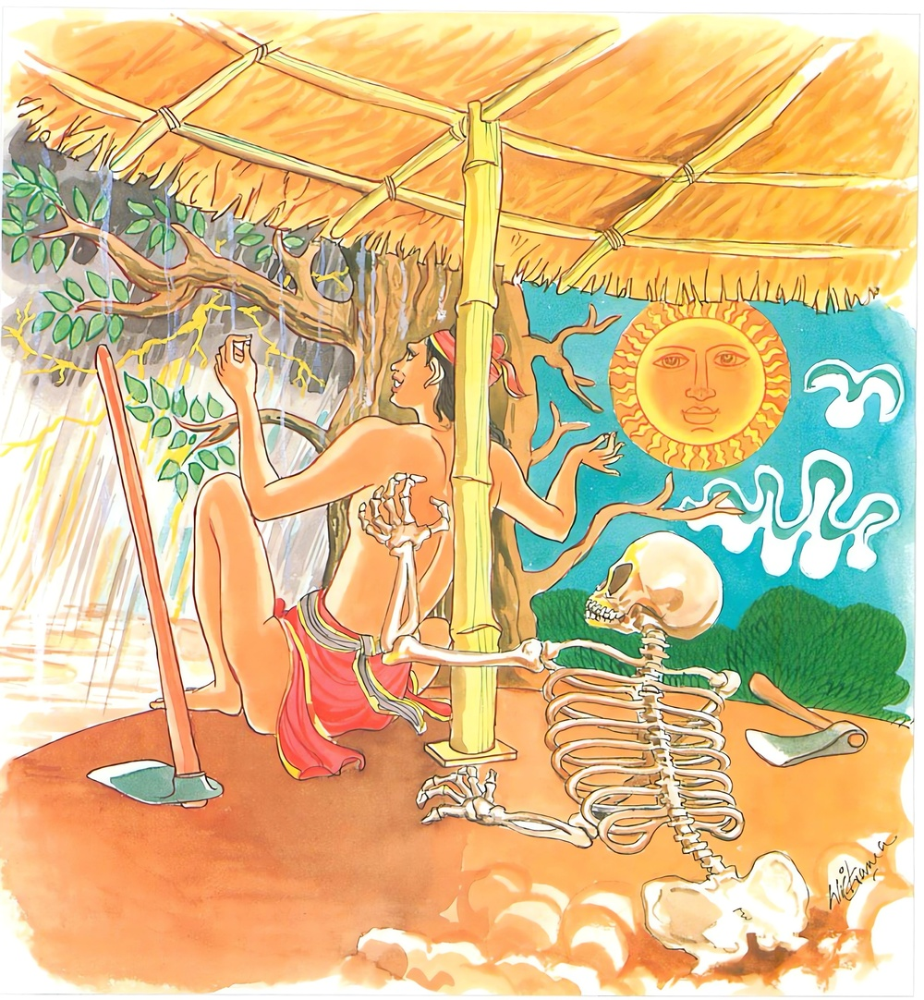

20-10 මහාධන වෙළෙන්දා
මෙම කතාව ධම්මපද අටුවාවෙන් ද කියවන්න.
ඉධ වස්සං වසිස්සාමි ඉධ හෙමන්ත ගිම්හිසු
ඉති බාලො විචින්තෙති අන්තරායං න බුජ්ඣති.
“වැසි සාර මස (මේ මේ කටයුතු කෙරෙමින්) මෙහි ම වෙසෙන්නෙමි. හිමත් සාර මස ද, ගිමන් සාරමස ද මෙහි ම වෙසෙන්නෙමි” යි මෙසේ (දෙලෝ වැඩ නොදන්නා) අණුවන තෙම නොයෙක් ලෙස සිතයි. අතුරෙහි තමහට වන ජීවිතාන්තරාය නො දනී.

මහාධන වෙළෙඳ තෙමේ වණුක් මල් දියෙන් රැඳූ රතු පැහැති රෙදිපිළී රැසක් ගැල් පන් සියයෙක පුරවා ගෙණ වෙළඳාමට සැවැත් නුවරට ගියේ ය. යන්නේ අතර මග වූ ගං ඉවුරකට පැමිණ හෙට ගඟින් එතෙර වන්නෙමි’යි ගං ඉවුරෙහි ම ගැල් ලිහා තබා එහි ම රැඳුනේ ය. එදා රෑ අහස වලාකුල් නැගී තදින් වැසි වසින්නට වන. වැසි දිය ගලා නොගොස් සත් දවසක් ම ගඟ පුරා සිටියේ ය. නුවර වැස්සෝ ද සතියක් මුළුල්ලෙහි නැකැත් කෙළි කෙළියහ. වෙණෙඳ ගැල් පුරවා ගෙණ ගිය රත් පිළීයෙන් වැඩෙක් නො වී ය. එකල්හි හෙතෙමේ “මම දුර සිට ආයෙමි, මේ පිළීත් රැගෙණ පෙරළා ගම් බලා ගියොත් එ ද පමායෙක් වන්නේ ය, එහෙයින් වැසි කාලයත් හිමත් කාලයත් ගිමන් කාලයත් මෙහි ම රැඳී රෙදි පිළිත් විකුණා ගණෙ ම යන්නෙමි”යි සිතා එහි ම රැඳී සිටියේ ය.
බුදුරජානන් වහන්සේ එහි පිඬු සිඟා වැඩි සේක්, වෙළෙඳාගේ මේ අදහස දැන සිනහ පහළ කළ සේක. ආනන්ද ස්ථවිරයන් බුදුරජුන් සිනහ පහළ කළ බව දැක “සිනහ පහළ කිරීමෙහි හේතු කිමැ?”යි උන්වහන්සේගෙන් විචාළාහු ය. “ආනන්ද! තමුසේ මහාධන වෙණෙඳහු දුටු වහු දැ?”යි බුදුරජුන් අසා වදාළ කල්හි ‘එසේය’යි අනාන්ද ස්ථවිරයන් වහන්සේ පිළිතුරු දුන්හ. “මහාධන වෙණෙඳා තමාගේ ජීවිතයට වන අන්තරාය නො දැක මේ මුළු අවුරුද්ද ම මෙහි ම රැඳී හිඳ බඩු විකුණන්ට අදහස් කොට සිටුනේ ය”යි වදාළ කල්හි “ස්වාමීනි! වෙළෙන්ඳාගේ ජීවිතයට අන්තරායයෙක් වනනේ ද? ඒ කෙබඳු එකෙක් දැ?”යි ඇසූහ. “ආනන්ද! ඔවු, අන්තරායයෙක් වන්නේ ය, අදින් සත් දවසක් ගිය තැන මෙ තෙමේ සත් දවස කෙළවර මියෙන්නේ ය” යි වදාරා නැවැත බුදුරජානන් වහන්සේ “කළයුතු වීර්ය්යය අද ම කළ යුතු ය, හෙට කවරෙක්, මැරේ ද, නො මැරේ දැ යි කෙසේ දනී ද, මහසෙන් ඇති මරහු හා අපගේ අල්ලස් දීමෙක් හෝ ගැණීමෙක් නැත්තේ ය, සන්හුන් රාගාදී වූ කෙලෙස් ඇති බුදුරජ තෙමේ මෙසේ වසන සුලු වූ කෙලෙස් තවන වැර ඇත්තා වූ දව රෑ දෙක්හි අනලස් වූ මෙසේ පිළිපන් පුද්ගලයා භද්දෙකරත්තය යි කියන්නේ ය” යි වදාළ සේක.
ඉක්බිති ආනන්ද ස්ථවිරයන් වහන්සේ “ස්වාමීනි! මේ වග ඔහුට දන්වන්නට මම යමි”යි කී විට “ආනන්ද! ඔහු හා විශ්වාස ඇත්තහු නම් යන්නැ”යි අවසර දුන්හ. ස්ථවිරයන් වහන්සේ ගැල් තුබූ තැනට ගොස් පිඬු සිඟා හැසිරුණාහ. වෙණෙඳ තෙමේ ආහාරයෙන් පිදී ය. එකල්හි ස්ථවිරයන් වහන්සේ “කොතෙක් කල් මෙහි වසන්නහු දැ?”යි ඔහුගෙන් ඇසූහ. “ස්වාමීනි! මම බොහෝ දුර සිට ආයෙමි, ඉදින් මම මේ බඩුත් රැගෙණ පෙරළා ගියෙම් නම් එය මට පමායෙක් වන්නේ ය, එහෙයින් මෙහි අවුරුද්දක් පමණ රැඳී සිට බඩුත් විකුණා ගෙණ යන්නෙමි”යි හේ කී ය. “උපාසක! ජීවිතයට වන අන්තරාය පහසුවෙන් දත හැක්කේ නො වේ, එහෙයින් අප්රමත්ත ව කටයුතු කිරීම වටනේ ය”යි තෙරුන් කී විට “කිමෙක් ද, ස්වාමීනි! මට අන්තරායයෙක් වන්නේ දැ?”යි ඇසී ය. “ඔවු, උපාසක! ඔබගේ ජීවිතය පවත්නේ සතියක් පමණ ය, සතියකට වඩා ඔබට ජීවත්වනු නො හැකි ය” යි කියා සිටියහ. වෙළෙන්දා සංවේගයට පැමිණ බුදුරජුන් ප්රධාන බික්සඟුන් පවරා සතියක් දන් දී බණ අසනු පිණිස බුදුරජුන්ගේ පාත්රය ගත්තේ ය. බුදුරජානන් වහනසේ “උපාසක! නුවණැත්තහු විසින් මේ මේ වැඩ කරමින් වැසි සාර මසත් හිමත් ගිමන් අටමසත් මෙහි ම වසන්නෙමි’යි සිතන්නට නො වටනේ ය, තමාගේ ජීවිතයට වන අනතුරු ගැණ ම සිතිය යුතු ය”යි වදාරා මේ ධර්මදේශනාව කළ සේක.
ඉධ වස්සං වසිස්සාමි ඉධ හෙමන්තගිම්හිසු,
ඉති බාලො විචින්නෙති අන්තරායං න බුජ්ඣතී ති.
වැසි සාර මස මෙහි ම වසන්නෙමි. හිමත් සාර මස හා ගිමන් සාර මසත් මෙහි ම වසන්නෙමි යි මෙසේ අඥාන තෙමේ සිතයි. තමාගේ ජීවිතයට වන අන්තරාය නො දනියි.
ඉධ වස්සං වසිස්සාමි = වැසි සාර මස මෙහි වසන්නෙමි.
ඉධ හෙමන්තගිම්හිසු = හිමත් සාර මස හා ගිමන් සාර මසත් මෙහි වසන්නෙමි.
ඉති බාලො විචින්නෙති = අඥාන තෙමේ මෙසේ සිතයි.
අන්තරායං න බුජ්ඣති = අන්තරාය නො දනියි.
එලොව මෙ ලොව වැඩ කිසිත් නො දත් අඥානයා “වැසි සාරමස මෙ නම් මෙ නම් වැඩ කරමින් වසන්නෙමි, හිමත් සාර මස හා ගිමන් සාර මසත් මෙ නම් මෙ නම් වැඩ කරමින් වසන්නෙමි”යි සිතන්නේ ය. එහෙත් ඉදිරියෙහි තමාගේ ජීවිතයට කෙබඳු අනතුරෙක් නපුරෙක් වේ දැ යි නො දනියි.
විනය පොතෙහි “උතූතිධ පන සාසනෙ හෙමන්තගිම්හවස්සානං වසෙන තීනි හොන්ති” යි හෙමන්ත - ගිම්හ - වස්සාන විසින් අවුරුද්දෙහි මාස දොළොස, ඍතු තුනකට බෙදන ලද්දේ ය. මෙහි මෙසේ බෙදන ලද්දේ මගධ රට වැස්සන් විසින් පිළිගත් සැටියෙනි. මගධ රට වැස්සෝ ඉල්මස කාල පක්ෂය පටන් පිළිවෙළින් සාර මසක් සාර මසක් කොට අවුරුද්ද තුනට බෙදා ගත්හ. මේ ඔවුන් බෙදා ගත් සැටි:
“චතුරො චතුරො මාසා කත්තිකකාල පක්ඛතො,
කමා හෙමන්ත ගිම්හානා වස්සානා උතුයො සියුං”
ඉල් - උඳුවප් - දුරුදු - නවම් යන සිවු මස හෙමන්තය යි. මැදින් - බක් - වෙසක් - පොසොන් යන සිවු මස ගිම්හ ය යි. ඇසළ - නිකිණි - බිනර - වප් යන සිවු මස වස්සානය යි.
ශීත - උෂ්ණ - වර්ෂා යන ලක්ෂණ විසින් ද ඍතුහු තුනට බෙදෙත්. “ශීතොෂ්ණවර්ෂාලක්ෂණාස්ත්රයඃ ඍතයො භවන්ති” යනු ආප්තයි. අනෙක් ඍතුහු සාධාරණ ලක්ෂණ ඇත්තාහු වෙති.
එහි හෙමන්ත නම්: හිම බහුල කාලය යි. “හිමානි එත්ථ සන්තීති = හෙමො, හෙමො එව = හෙමන්තො” යනු අරුත්. ගිම්හ නම්: හිරු රැස් සැඬපරුස කාලය යි. “ගරති පීළයතීති = ගිම්හො” යනු අරුත්. වස්සාන නම්: වැසි බහුල කාලය යි. “වස්සති එත්ථාති = වස්සං” යනු අරුත්.
මේ මෙසේ බෙදුනේ ද ලෝ වැසි මිනිසුන් විසින් තම තමන් උපන් රටවල කාලගුණය අනුව අවුරුද්දෙහි මාස දොළොස මෙයට වෙනස්ව ද බෙදා ගෙණ ඇත්තේ ය.
“වසන්තග්රීෂ්මවර්ෂාශ්ව ශරද්ධෙමන්තශෛශිරාඃ,
ෂඩමී ඍතවඃ ප්රොකතා ශෛවත්රාදීනාං යුගෛඃ ක්රමාත්”
යි ජ්යොතිශ්ශාස්ත්රයෙහි ආයේ ය. වසන්ත - ග්රීෂ්ම - වර්ෂා - ශරත් - හෙමන්ත - ශිශිර යි ඍතූන් සවැදෑරුම් ය යි මෙයින් කියත්. එහි බක් - වෙසක් දෙමස වසන්ත ය. පොසොන් - ඇසළ දෙ මස ග්රීෂ්ම ය. නිකිණි - බිනර දෙ මස වර්ෂා ය. වප් - ඉල් දෙ මස ශරත් ය. උඳුවප් - දුරුතු දෙම ස හෙමන්ත ය. නවන් - මැදින් දෙ මස ශිශිර ය.
“මාසෛඃ ද්විසඞ්ඛෛර්මාඝාද්යෛඃ ක්රමාත් ෂඩෘතවඃ සමෘතාඃ,
ශිශිරොථ වසන්තශ්ව ග්රීෂ්ම වර්ෂාශරද්ධිමාඃ”
යි මෙහි ලා වෛද්යශාස්ත්රයෙහි කියන ලද්දේ ය. එහි නවන් මස ආදි කොට දෙ මස දෙ මස පිළිවෙළින් ශිශිර - වසන්ත - ග්රීෂ්ම - වර්ෂා - ශරත් - හිම යි සයක් කොට බෙදුනේ ය.
ශාර්ඞ්ගධරසංහිතායෙහි මෙෂසඞ්ක්රාන්තියෙහි මුල සිට වෘෂභ රවිය අවසන් කොට ඇති කාලය, ග්රීෂ්ම, මිථුන කටක රවි දෙක ප්රාවෘෂ්, සිංහ - කන්යා රවි දෙක වර්ෂා, තුලා - වෘශ්චික රවි දෙක ශරත්, ධනු - මකර රවි දෙක හෙමන්ත, කුම්භ - මීන රවි දෙක වසන්ත ය යි කියන ලදී. මේ ඒ කීම:-
“ග්රීෂ්මො මෙෂ වෘෂෞ ප්රොක්තෞ ප්රාවෘඩ් මිථුන කර්කටෞ,
සිංහ කන්යෙ සමෘතා වර්ෂා තුලා වෘශ්චිකයොඃ ශරත්,
ධනුර් ග්රාහෞ ච හෙමන්තෞ වසන්තඃ කුම්භමීනයොඃ”යි
සූර්ය්ය මාස විසින් කින ලද මෙෂ - වෘෂභ දෙක්හි මද වෙනසෙක් ඇත ද, ඒ බක් - වෙසක් දෙ මස ම ය. මුලින් කියූ වසන්තය, මෙහි ග්රීෂ්ම යි දක්වන ලදි. ශිශිර විසින් ඍතුයෙක් මෙහි නො ආයේය. ප්රාවෘෂ් - වර්ෂා දෙකින් වැසි කාලය ම කියනු ලැබේ. ඒ වැසි කාලය, මිථුන - කටක - සිංහ - කන්යා යන සතර ආත්ම කොට සිටියේ ය. අධික වැස්ස ප්රාවෘෂ් ය. මද වැස්ස වර්ෂා ය. මිථුන - කටක දෙක්හි අධික වැසි ලැබේ. සිංහ - කන්යා දෙක්හි මද වැසි ලැබේ.
අවුරුද්ද ඍතු සයට බෙදූ තැන හෙමන්ත - ශිශිර දෙක එක් කොට පසක් විසින් බෙදා ඇත්තේ ය. “ද්වාදශමාසාඃ පඤ්චර්තවඃ හෙමන්ත ශිශිරයොරෙකත්රීකරණෙන වීවක්ෂතම්” යනු ආප්තය.
ධර්මදේශනාවගේ අවසානයේ වණික් තෙමේ සෝවල් පලයෙහි පිහිටා ගත්තේ ය. ධර්මදේශනා තොමෝ පැමිණ සිටි පිරිසට ද වැඩ සහිත වූ ය. වණික් තෙමේ බුදුරජුන් පසු පස ගොස් පෙරළා අවුත් හිසරුදායෙක් උපනැ යි ඇඳෙහි වැතිර ගත්තේ ය. වැතිර ගත්තේ ම කලුරිය කොට තුසිතභවනයෙහි උපන්නේ ය.
මහාධනවාණිජ වස්තුව නිමි.